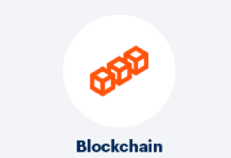

Block Chain

A block-chain is a database that is shared across a network of computers. Once a record has been added to the chain it is very difficult to change.
To ensure all the copies of the database are the same, the network makes constant checks.
Block-chains have been used to underpin cyber-currencies ]
like bitcoin, but many other possible uses are emerging.
Important points on Block-Chains
- A Block-chain is a type of diary or spreadsheet containing information about transactions.
- Each transaction generates a hash.
- A hash is a string of numbers and letters.
- Transactions are entered in the order in which they occurred. Order is very important.
- The hash depends not only on the transaction but the previous transaction's hash.
- Even a small change in a transaction creates a completely new hash.
- The nodes check to make sure a transaction has not been changed by inspecting the hash.
- If a transaction is approved by a majority of the nodes then it is written into a block.
- Each block refers to the previous block and together make the Blockchain.
- A Blockchain is effective as it is spread over many computers, each of which have a copy of the Blockchain.
- These computers are called nodes.
- The Blockchain updates itself every 10 minutes.